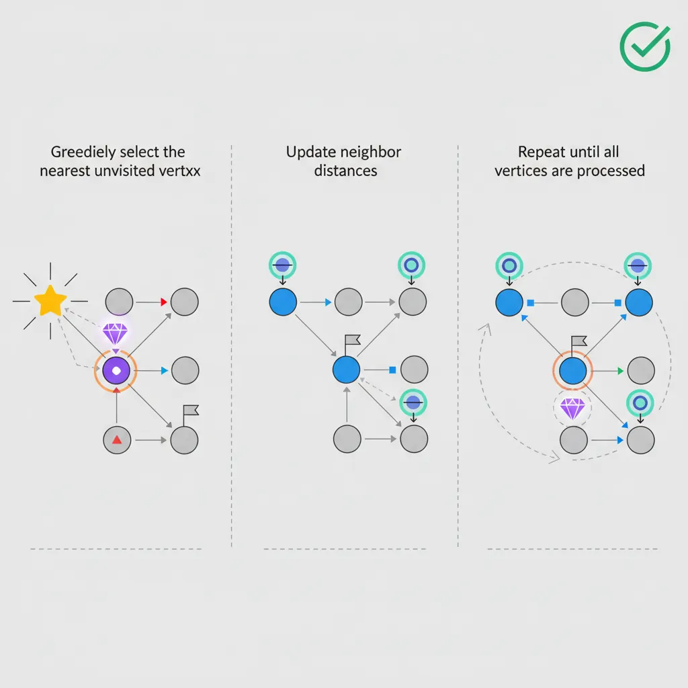

1. Problem and Motivation
Once a graph is built and you can traverse it with BFS or DFS, the next question is almost always about weight: which route costs the least, and in what order must dependent steps run? A mapping app needs the cheapest route between two points, not just any route. A build system needs to know which modules to compile before others so that nothing runs against code that hasn't been produced yet. Both problems live in the same graph, but neither is answered by traversal alone.
This lesson covers two algorithm families that answer those questions. Shortest path algorithms — Dijkstra's, Bellman-Ford, and Floyd-Warshall — find least-cost routes under different assumptions about edge weights and how many sources you need distances from. Topological sort — via Kahn's algorithm or a DFS-based approach — orders a directed acyclic graph so every dependency appears before what depends on it. Together they cover most weighted-routing and ordering problems that show up in interviews and in production systems such as routers, build tools, and package managers.
2. Prerequisites
This lesson assumes you can already represent a graph (adjacency list, matrix, or edge list) and traverse one. If BFS and DFS are not yet second nature, start with Part 12: Graph Traversal & Representations before continuing here — every algorithm below builds directly on those traversal patterns.
Dijkstra's algorithm also depends on a min-heap to always expand the closest unvisited vertex next. If the mechanics of pushing, popping, and re-heapifying a priority queue are unfamiliar, review the heap section of Part 11: Heaps, Sorting & Hashing first.
3. Shortest Path Algorithms

flowchart TD
A["Shortest Path Problem"] --> B{"Negative
Weights?"}
B -->|No| C{"Single Source?"}
B -->|Yes| D{"Negative
Cycles?"}
C -->|Yes| E{"Weighted?"}
C -->|No| F["Floyd-Warshall
O V cubed"]
E -->|Yes| G["Dijkstra
O V+E log V"]
E -->|No| H["BFS
O V+E"]
D -->|No| I["Bellman-Ford
O VE"]
D -->|Yes| J["No Solution
Detect and Report"]
style G fill:#e8f4f4,stroke:#3B9797
style H fill:#e8f4f4,stroke:#3B9797
style I fill:#f0f4f8,stroke:#16476A
style J fill:#fff5f5,stroke:#BF092F
Dijkstra's Algorithm
Dijkstra's algorithm finds the shortest path from a single source vertex to all other vertices in a graph with non-negative edge weights. It works on a greedy principle: always process the unvisited vertex with the smallest known distance, then update its neighbors. This greedy choice is safe because non-negative weights guarantee that once a vertex is finalized (popped from the priority queue), no shorter path to it can exist.
Key Insight
Think of Dijkstra as a "wavefront" expanding outward from the source — it always expands to the nearest unvisited node first, like ripples on a pond. The priority queue (min-heap) efficiently selects which node to expand next. Time complexity: $O((V + E) \log V)$ with a binary heap.
Algorithm steps: (1) Initialize all distances to ∞ except source = 0. (2) Push source into a min-heap. (3) Pop the minimum-distance vertex, relax all its edges (if $dist[u] + weight(u,v) \lt dist[v]$, update $dist[v]$). (4) Repeat until the heap is empty. The relaxation step is the core — it asks "can we reach $v$ faster by going through $u$?"
Bellman-Ford Algorithm
Bellman-Ford solves the single-source shortest path problem even when edges have negative weights — something Dijkstra cannot handle. The tradeoff is speed: $O(V \times E)$ versus Dijkstra's $O((V+E) \log V)$. Its key advantage is the ability to detect negative-weight cycles — loops where total weight is negative, making "shortest path" undefined (you could loop forever getting shorter).
How it works: Relax every edge in the graph $V-1$ times. After $k$ iterations, the algorithm guarantees correct shortest distances for all paths using at most $k$ edges. Since the longest simple path has at most $V-1$ edges, $V-1$ iterations suffice. If a $V$-th iteration still reduces a distance, a negative cycle exists.
When to Choose Bellman-Ford over Dijkstra
Use Bellman-Ford when: (1) edges can have negative weights (e.g., currency arbitrage, network routing with costs/rebates), (2) you need to detect negative cycles, or (3) the graph is given as an edge list (Bellman-Ford iterates over edges directly). For all other cases, prefer Dijkstra for speed.
Floyd-Warshall Algorithm
Floyd-Warshall solves the all-pairs shortest path problem: the shortest distance between every pair of vertices, not just from one source. Instead of running Dijkstra or Bellman-Ford from every vertex, it uses a single dynamic-programming pass over all possible intermediate vertices. It works with negative edge weights, but — like Bellman-Ford — assumes no negative cycle when reporting a real distance.
How it works: Initialize $dist[i][j]$ to the direct edge weight (or $0$ if $i=j$, $\infty$ if no edge exists). Then, for each vertex $k$ considered as an intermediate stop, check every pair $(i, j)$: if routing through $k$ is shorter — $dist[i][k] + dist[k][j] \lt dist[i][j]$ — update $dist[i][j]$. After looping $k$ over all vertices, every $dist[i][j]$ holds the true shortest distance using any subset of vertices as intermediates. This gives $O(V^3)$ time and $O(V^2)$ space from three nested loops, and a negative cycle reveals itself as a negative value on the diagonal ($dist[v][v] \lt 0$).
When to Choose Floyd-Warshall
Reach for Floyd-Warshall when you need distances between every pair of vertices, the graph is dense (edges close to $V^2$), or $V$ is small enough that $O(V^3)$ is cheap — and the triple-loop implementation is simpler to write correctly than looping Dijkstra over every source. On a sparse graph with many vertices, running Dijkstra from each source ($O(V(V+E)\log V)$) is usually faster; Floyd-Warshall wins on simplicity and dense, small-to-medium graphs.
Two related shortest-path-family topics — Minimum Spanning Tree (Kruskal's and Prim's algorithms) and A* search — are not covered here; they are a gap in this lesson's roadmap, not a promise of a future lesson.
4. Topological Sort
A topological ordering of a Directed Acyclic Graph (DAG) arranges vertices so that for every directed edge $u \to v$, vertex $u$ appears before $v$. Think of it as a valid execution order — like determining which courses to take first given prerequisites, or which build targets to compile before others.
Two classic approaches exist: Kahn's Algorithm (BFS-based) repeatedly removes vertices with zero in-degree, while the DFS-based approach adds vertices to the result in reverse post-order. Both run in $O(V + E)$. A topological sort exists if and only if the graph has no cycles — if Kahn's algorithm processes fewer than $V$ vertices, a cycle exists.
Real-World Applications
Build systems (Makefile dependencies), package managers (npm/pip install order), spreadsheet cell evaluation (formulas depend on other cells), course scheduling (prerequisites), and task pipelines (CI/CD stages). Any problem with "do X before Y" constraints maps to topological sort.
5. Exercises and Mastery
Easy
- Network Delay Time (LeetCode 743): given directed weighted edges, a source node, and a signal that must reach every one of $n$ nodes, find the minimum time for that to happen using Dijkstra's algorithm; return $-1$ if some node is unreachable.
Medium
- Course Schedule II (LeetCode 210): given course prerequisites, return a valid order to take all courses using topological sort (Kahn's or DFS-based); return an empty array if a cycle makes no ordering possible.
Hard
- Cheapest Flights Within K Stops (LeetCode 787): find the cheapest price from a source to a destination using at most $k$ intermediate stops. Plain Dijkstra doesn't respect the stop limit safely, so solve it with Bellman-Ford-style relaxation capped at $k+1$ rounds — each round relaxes every edge once, corresponding to one additional stop.
Review rhythm: tomorrow, redo Dijkstra and Kahn's algorithm from memory without notes; next week, implement Bellman-Ford and Floyd-Warshall in a language you have not used yet; several weeks later, solve Cheapest Flights Within K Stops cold and explain why plain Dijkstra fails on it. Finally, teach the difference between single-source and all-pairs shortest paths, and between BFS-based and DFS-based topological sort, to someone who only knows basic graph traversal.
6. Summary Cheat Sheet
- BFS finds shortest paths only in unweighted graphs — every edge costs the same, so level-order distance is minimum distance.
- Dijkstra's algorithm finds single-source shortest paths in $O((V+E)\log V)$ when every edge weight is non-negative; it silently produces wrong answers if any edge is negative.
- Bellman-Ford solves single-source shortest paths in $O(V \times E)$ even with negative edges, and doubles as a negative-cycle detector via a $V$-th relaxation pass.
- Floyd-Warshall computes all-pairs shortest paths in $O(V^3)$ time and $O(V^2)$ space — the simplest choice for dense graphs or small $V$ when every pair's distance is needed, though slower than running Dijkstra from every vertex on a large sparse graph.
- Quick decision list: unweighted → BFS; weighted, non-negative, single source → Dijkstra; negative weights or cycle detection → Bellman-Ford; all-pairs on a small or dense graph → Floyd-Warshall.
- Topological sort exists only for DAGs; Kahn's algorithm (BFS on in-degrees) and the DFS-based approach (reverse post-order) both run in $O(V+E)$ and both detect cycles when they cannot order every vertex.
- Minimum Spanning Tree (Kruskal's/Prim's) and A* search are related but distinct shortest-path-family topics not covered in this lesson.